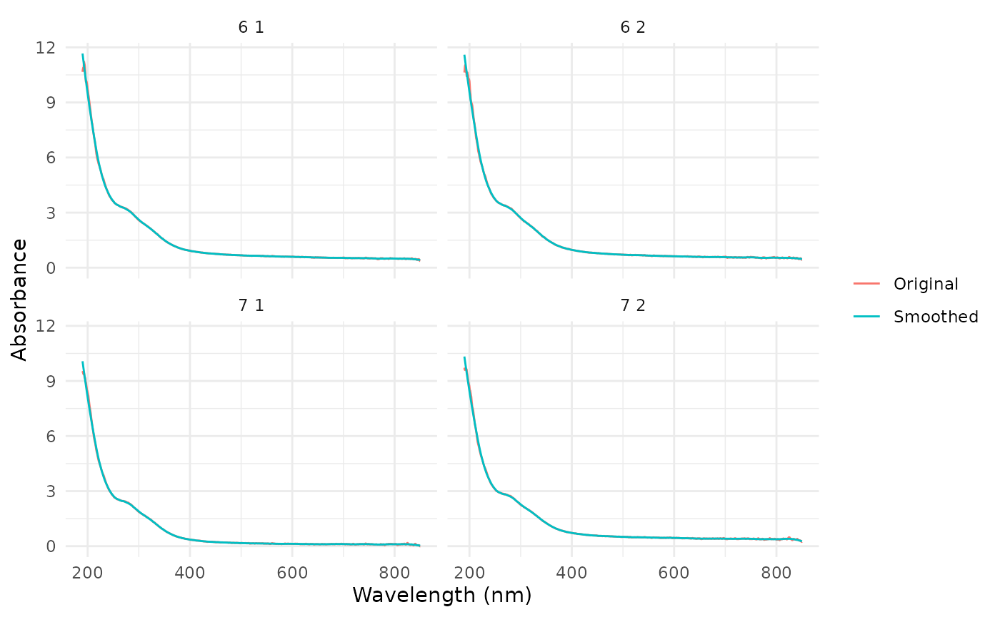
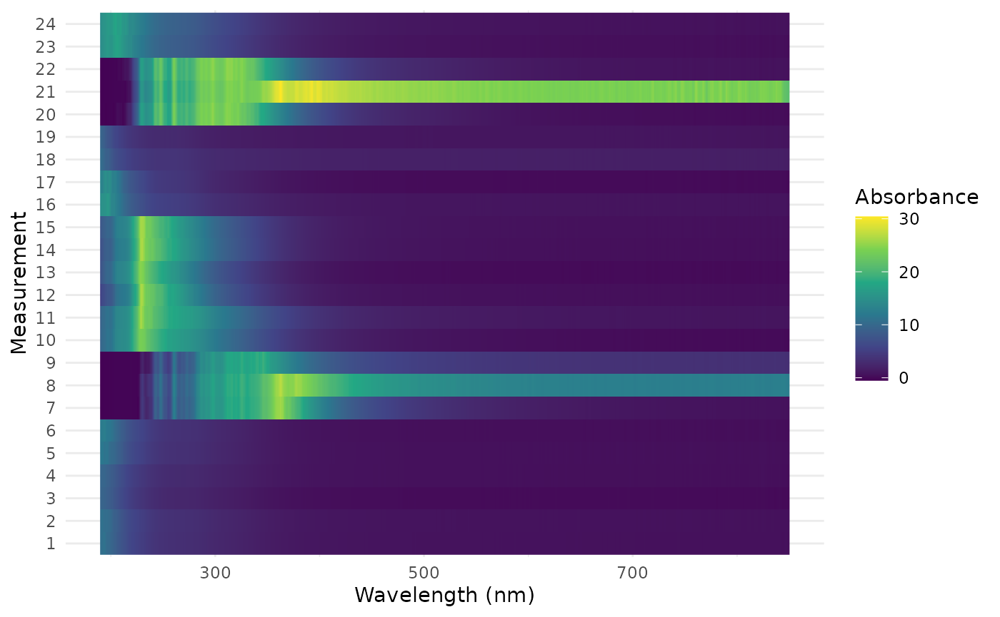

library(nanodRop)
library(dplyr)
library(ggplot2)
spectra <- read_nanodrop(system.file("extdata", "nanodrop_example.tsv", package = "nanodRop"))Absorbance at wavelength pairs
parse_waves() pulls out the absorbance at chosen
wavelengths for each measurement and compares them in pairs. With
type = "ratio" it gives the usual nucleic acid purity
ratios:
purity <- parse_waves(spectra, wave_pairs = list(c(260, 280), c(260, 230)), type = "ratio")
head(purity)
#> # A tibble: 6 × 7
#> samps measurement abs_260 abs_280 abs_230 ratio_260_280 ratio_260_230
#> <chr> <int> <dbl> <dbl> <dbl> <dbl> <dbl>
#> 1 6 1 1 3.39 3.13 4.88 1.08 0.695
#> 2 6 2 2 3.49 3.24 5.03 1.08 0.694
#> 3 7 1 3 2.54 2.37 3.93 1.08 0.647
#> 4 7 2 4 2.90 2.74 4.28 1.06 0.678
#> 5 8 1 5 3.53 3.29 5.31 1.07 0.664
#> 6 8 2 6 3.70 3.45 5.65 1.07 0.656With the default type = "diff" it gives differences,
which are useful for peak heights above a baseline:
peaks <- parse_waves(spectra, wave_pairs = list(c(300, 400), c(542, 644)))
head(peaks)
#> # A tibble: 6 × 8
#> samps measurement abs_300 abs_400 abs_542 abs_644 diff_300_400 diff_542_644
#> <chr> <int> <dbl> <dbl> <dbl> <dbl> <dbl> <dbl>
#> 1 6 1 1 2.58 0.93 0.652 0.546 1.65 0.106
#> 2 6 2 2 2.70 0.968 0.686 0.578 1.73 0.108
#> 3 7 1 3 1.87 0.352 0.16 0.102 1.51 0.058
#> 4 7 2 4 2.26 0.722 0.499 0.402 1.53 0.097
#> 5 8 1 5 2.68 0.756 0.517 0.43 1.93 0.087
#> 6 8 2 6 2.79 0.709 0.404 0.341 2.08 0.063Each measurement is its own row, identified by
measurement (and file, if the data came from
read_nanodrop_dir()), even when sample names repeat. To
average replicates, group by whatever identifies a sample. In the
example file names like "6 1" and "6 2" carry
the sample and the replicate number:
purity %>%
mutate(sample = sub(" .*", "", samps)) %>%
group_by(sample) %>%
summarise(across(starts_with("ratio"), mean), replicates = n())
#> # A tibble: 11 × 4
#> sample ratio_260_280 ratio_260_230 replicates
#> <chr> <dbl> <dbl> <int>
#> 1 10 1.12 0.705 2
#> 2 11 1.34 0.659 2
#> 3 12 1.29 0.676 2
#> 4 13 1.17 0.701 2
#> 5 14 1.18 0.864 2
#> 6 15 1.14 1.37 3
#> 7 16 1.10 0.741 2
#> 8 6 1.08 0.694 2
#> 9 7 1.07 0.663 2
#> 10 8 1.07 0.660 2
#> 11 9 1.12 3.41 3Summaries per spectrum
The output of read_nanodrop() is a long table, so dplyr
summaries work directly:
spectra %>%
group_by(samps, measurement) %>%
summarise(
peak_wavelength = waves[which.max(abs)],
peak_abs = max(abs),
.groups = "drop"
) %>%
head()
#> # A tibble: 6 × 4
#> samps measurement peak_wavelength peak_abs
#> <chr> <int> <dbl> <dbl>
#> 1 10 1 10 228. 23.8
#> 2 10 2 11 229 26.1
#> 3 11 1 12 230. 26.3
#> 4 11 2 13 228. 24.8
#> 5 12 1 14 230 26.4
#> 6 12 2 15 230. 26.1Quality checks
# Measurements with negative absorbance anywhere in the spectrum
spectra %>%
filter(abs < 0) %>%
distinct(samps, measurement)
#> samps measurement
#> <char> <int>
#> 1: 7 1 3
#> 2: 9 1 7
#> 3: 9 2 8
#> 4: 9 3 9
#> 5: 10 1 10
#> 6: 11 2 13
#> 7: 13 2 17
#> 8: 15 1 20
#> 9: 15 2 21
#> 10: 15 3 22
# Every measurement should cover the same wavelengths
spectra %>%
count(measurement) %>%
distinct(n)
#> n
#> <int>
#> 1: 1321Smoothing
smoothed <- spectra %>%
filter(measurement <= 4) %>%
group_by(measurement) %>%
mutate(smoothed = predict(loess(abs ~ waves, span = 0.1))) %>%
ungroup()
ggplot(smoothed, aes(waves)) +
geom_line(aes(y = abs, colour = "Original")) +
geom_line(aes(y = smoothed, colour = "Smoothed")) +
facet_wrap(~samps) +
labs(x = "Wavelength (nm)", y = "Absorbance", colour = NULL) +
theme_minimal()
Heatmap
ggplot(spectra, aes(waves, factor(measurement), fill = abs)) +
geom_raster() +
scale_fill_viridis_c() +
labs(x = "Wavelength (nm)", y = "Measurement", fill = "Absorbance") +
theme_minimal()